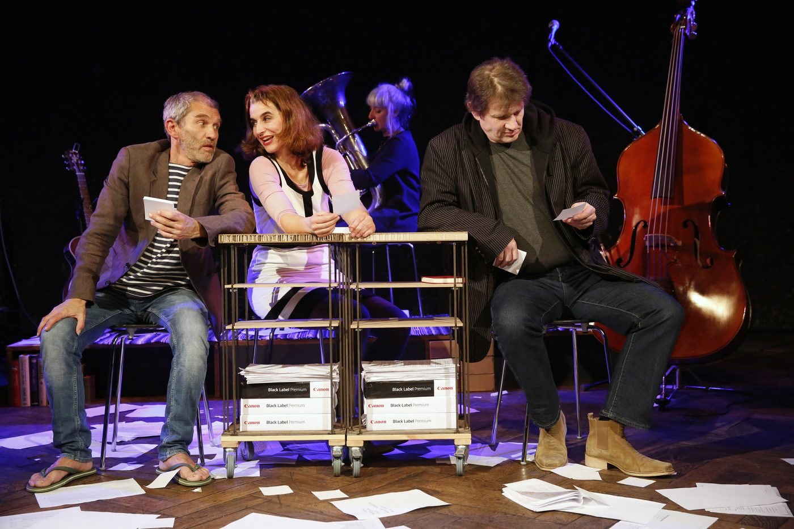
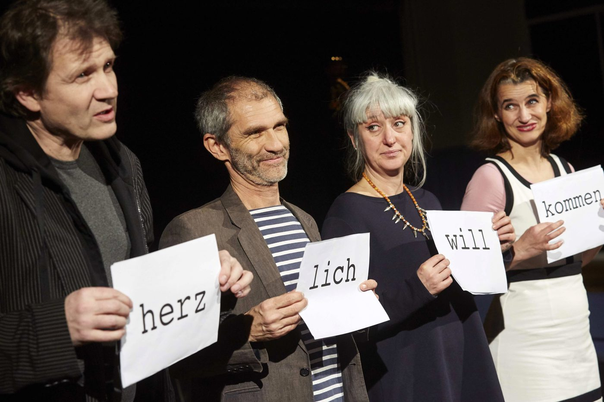
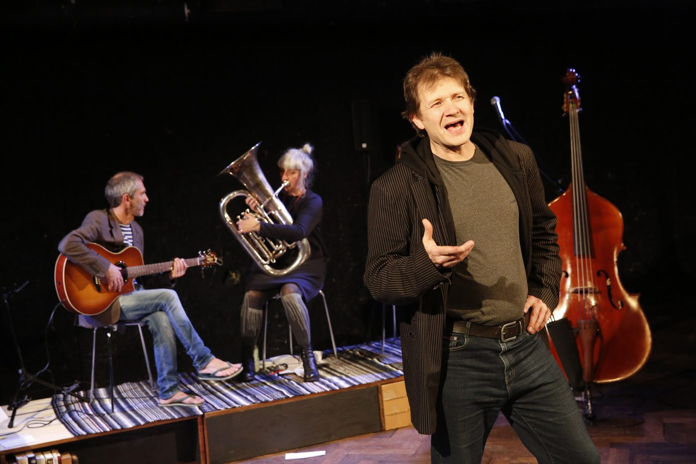
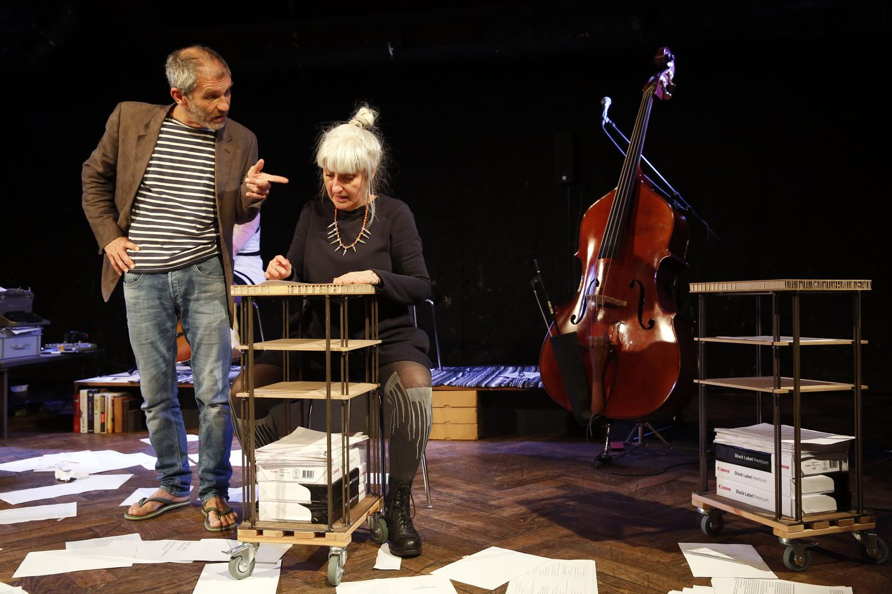
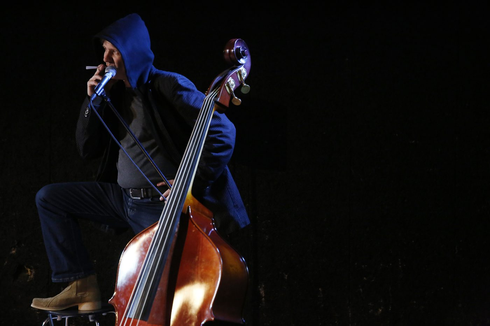
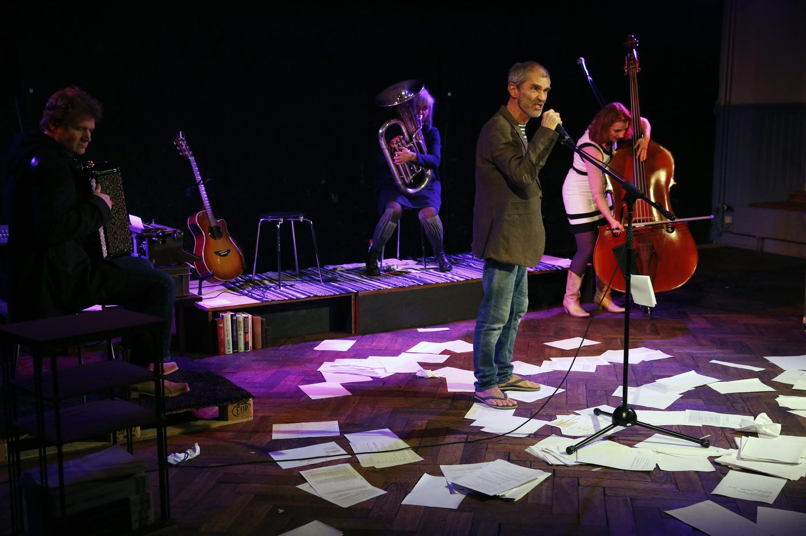
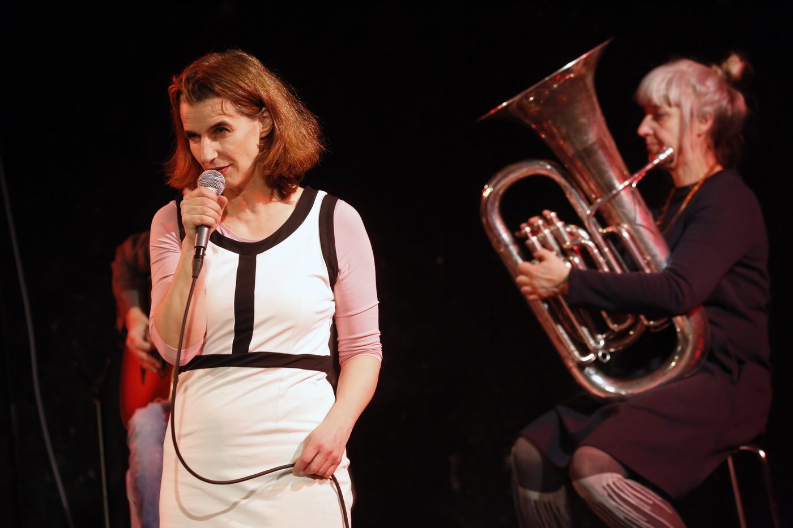
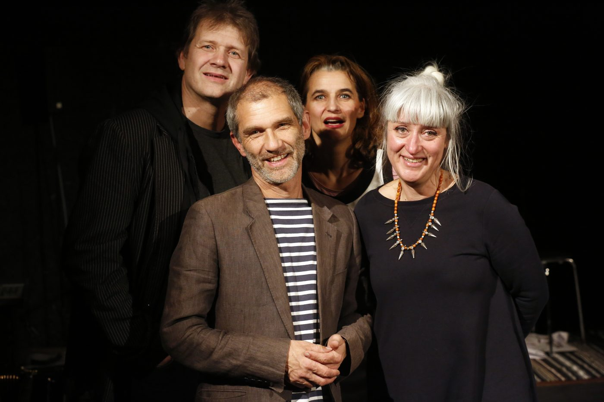

Bei «Gschnorr» steht die Sprache selbst im Rampenlicht einer Hör-Show. Die vier N!NA-Theater-Akteure lassen sie in allen erdenklichen Formen witzig und virtuos durch sich hindurchfliessen: Da kommt das Wort mal magisch, mal modisch, manchmal medial verfremdet, aber immer melodisch daher. Das musikalische «Sprech-Theater» ergründet kreativ und verspielt die tiefere Bedeutung der Sprache für die Identität des Menschen. Von der Schöpfungsgeschichte bis ins moderne Babel, wo die Worthülsen knacken und die Sprachhüllen fallen.
Am 13. Januar 2016 hatte die 13. N!NA-Produktion «Gschnorr» vor ausverkauftem Theater im KreuzKultur Solothurn Premiere.
«Selten einen so geistreichen Abend erlebt.» Gundi Klemm, Solothurner Zeitung
- Spiel
- Franziska Senn, Reto Baumgartner, Ueli Blum, Trix Meier
- Regie
- Ueli Blum, Adrian Meyer
- Musik
- Claude Meyer
- Ausstattung
- Valérie Soland
- Produktionsleitung
- Eva Batz-Deschler







